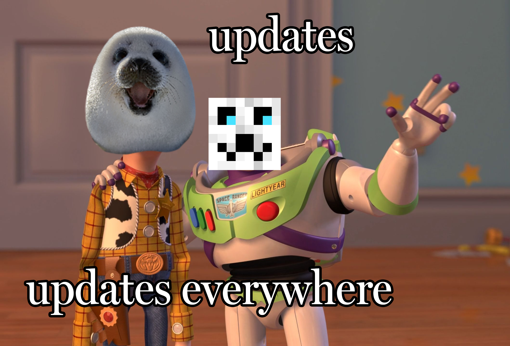

Blog Post / April 8th, 2023
Updates, Updates Everywhere
There are too many to describe individually so here’s a long list:
Oh also nothing is in any kind of order.
- Quick navigation doesn’t add “.html” to the path if the path contains a “.” or “\”.
- The “download Java version” button on TicTacToe doesn’t appear on short screens (phones).
- TicTacToe-Java was merged with TicTacToe: download it from the icon in the bottom left.
- On the ‘icons’ page, it won’t copy the icon link when control is pressed (so you can copy other things).
- Projects+ says “no results” when there are no results.
- ‘Numbers’ can now generate a random string from provided characters.
- Previously http redirects, /001, /002, and /003 are now firebase redirects to ERROR 410: Gone.
- New project: ‘progress’.
- The YouTube embed on ‘The Square’ was replaced with the image that was there before, but now it links to the YouTube video. Now there are no cookies!
- New project: ‘countdown’.
- Fixed a bug where the menu icon was faded after being pressed on the about page.
- Applied footer.js to the download page.
- New project: ‘Minecraft & Motion’.
- New project: ‘TicTacToe’.
- The text on buttons like the one the one at the top of the projects+ page can not longer be selected.
- Something called “Padding in projects” on my Trello board... I have no idea what it is.
- Fixed bug where ‘progress’ doesn’t accept fractions with zero as the numerator (sometimes there’s been 0 progress!).
- You can now search projects+! Only by URL at the moment. Use ?tag=“tag goes here” and &search=“search goes here”.
- The list of featured projects has been changed quite a bit!
- New project: ‘WandStuff’.
I also don’t feel like putting any links here—I’m sure you can find what I’m talking about yourself.
If you’d like anything here
explained in more depth, you could ask on my Discord server and maybe I’ll make a more detailed blog post on it.
And if you haven’t tried
TicTacToe yet...WHAT ARE YOU WAITING FOR???
Ok thanks bye.